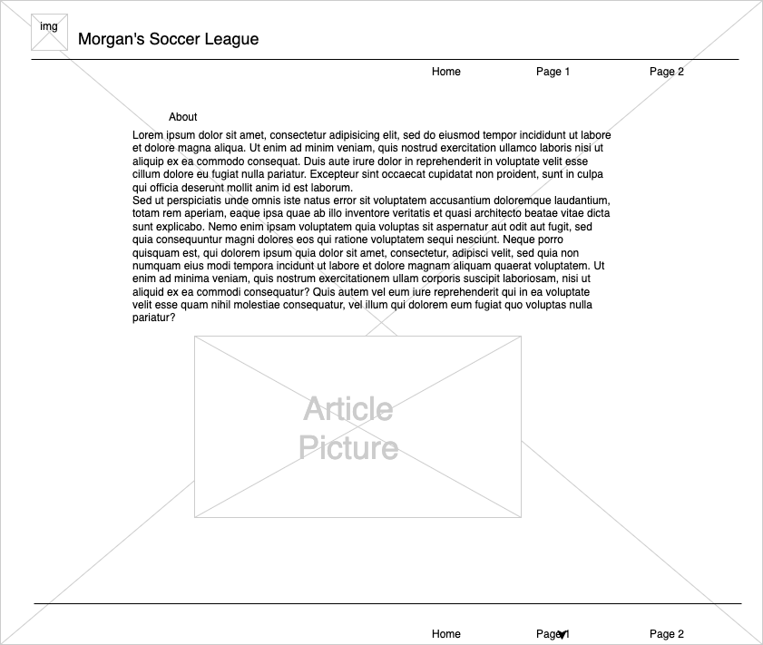
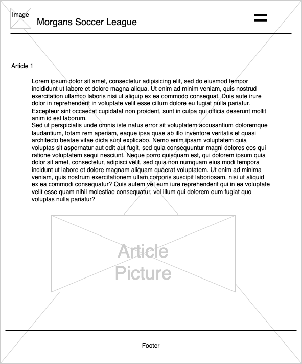

Site Name: morganssoccerleague.com
I am naming my site this because it explains what it is. Morgan created it and it keeps track of a soccer league
Site Purpose: The site will keep track of past and upcoming fixtures, scores, and league standings.
Scenarios: What are the upcoming fixtures? What was the score of last weeks game? Who is in first place?
Typography: Roboto
Primary Color: Teal
Secondary Color: White Smoke
Accent Color: Bittersweet
desktop wireframe
mobile wireframe
